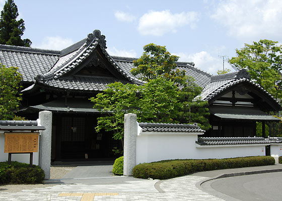
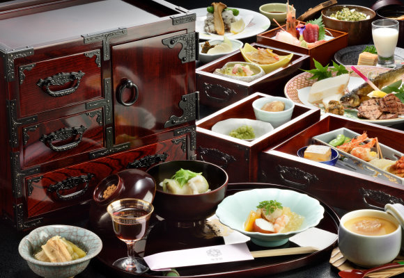
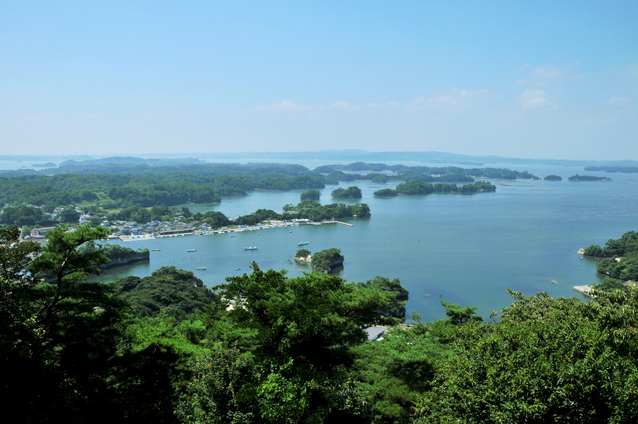

Social Events
Welcome reception
November 25 (Sun.) 6:00 PM
Restaurant Shikisai (Four Seasons Club), Aoba Memorial Hall 3F
Dinner
November 26 (Mon.) 6:30 PM
Hotel Metropolitan Sendai (next to Sendai Station)
https://www.sendaimetropolitan.jp/en-gb
Banquet
November 27 (Tue.) 7:00 PM
Restaurant Shokeikaku
Shokeikaku, a restaurant in the former Date family residence. Overlooking the splendid garden from a traditional Japanese style (Shoin style) room, you can taste various local dishes served in a small Sendai Tansu (a Japanese chest of drawers).


Excursion
November 28 (Wed.) 1:20 PM
Fee: free (including a lunchbox), reservation needed
A bus tour, visiting Matsushima Bay, one of the three scenic spots in Japan. In addition to the bay cruise using a pleasure boat, you will see the
traces of the Great East Japan Earthquake and tsunami. The bus returns to Sendai Station in the evening.
